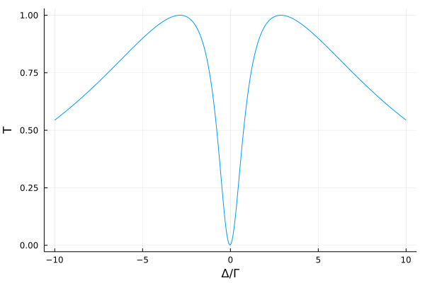

Cavity Antiresonance
In this example we investigate a system of $N$ closely spaced quantum emitters inside a coherently driven single mode cavity. The model is descriped in D. Plankensteiner, et. al., Phys. Rev. Lett. 119, 093601 (2017). The Hamiltonian of this system is composed of three parts $H = H_c + H_a + H_{\mathrm{int}}$, the driven cavity $H_c$, the dipole-dipole interacting atoms $H_a$ and the atom-cavity interaction $H_\mathrm{int}$:
\[\begin{align*} H_\mathrm{c} &= \Delta_c a^\dagger a + \eta (a^\dagger + a) \\ &\\ H_a &= \Delta_a \sum\limits_{j} \sigma_j^{22} + \sum\limits_{i \neq j} \Omega_{ij} \sigma_i^{21} \sigma_j^{12} \\ &\\ H_\mathrm{int} &= \sum\limits_{j} g_j (a^\dagger \sigma_j^{12} + a \sigma_j^{21}) \end{align*}\]
Additionally the system features two decay channels, the lossy cavity with photon decay rate $\kappa$ and collective atomic emission described by the decay-rate matrix $\Gamma_{ij}$. In our example we will consider the case of $N=2$ atoms.
We start by loading the packages.
using QuantumCumulants
using OrdinaryDiffEq, SteadyStateDiffEq, ModelingToolkit
using PlotsThe Hilbert space for this system is given by one cavity mode and $N$ two-level atoms and the parameters $g_j, \, \Gamma_{ij}$ and $\Omega_{ij}$ are defined as a function of atom $i$ and $j$. We will describe the system in first order mean-field.
order = 1
@cnumbers Δc η Δa κ
g(j) = cnumbers(Symbol(g, j))[1]
Γ(i,j) = cnumbers(Symbol(Γ, i, j))[1]
Ω(i,j) = cnumbers(Symbol(Ω, i, j))[1]
N = 2 #number of atoms
hc = FockSpace(:cavity)
ha = ⊗([NLevelSpace(Symbol(:atom,i),2) for i=1:N]...)
h = hc ⊗ haNow we create the operators on the composite Hilbert space. The transition operator of the $k$-th atom acts here on the Hilbert space $k+1$, since the first Hilbert space is the one of the cavity.
@qnumbers a::Destroy(h)
σ(i,j,k) = Transition(h,Symbol("σ_{$k}"),i,j,k+1)We define the Hamiltonian and Liouvillian. For the collective atomic decay we can write the corresponding jump process with a rate-matrix $R$ and a vector $J$ of jump operators, such that an operator $\mathcal{O}$ follows the equation
\[\dot{\mathcal{O}} = \sum_{ij} R_{ij} (J_i^\dagger \mathcal{O} J_j - J_i^\dagger J_j \mathcal{O}/2 - \mathcal{O} J_i^\dagger J_j/2) + \mathrm{noise}.\]
# Hamiltonian
Hc = Δc*a'a + η*(a' + a)
Ha = Δa*sum(σ(2,2,k) for k=1:N) +
sum(Ω(i,j)*σ(2,1,i)*σ(1,2,j)*(i≠j) for i=1:N for j=1:N)
Hi = sum(g(k)*(a'σ(1,2,k) + a*σ(2,1,k)) for k=1:N)
H = Hc + Ha + Hi
# Jump operators & and rates
J = [a, [σ(1,2,k) for k=1:N]]
rates = [κ, [Γ(i,j) for i=1:N, j=1:N]]Using the Hamiltonina and Liouvillian we derive the system of equations in first order mean-field.
ops = [a, σ(2,2,1), σ(1,2,1)]
eqs = meanfield(ops,H,J;rates=rates,order=order)\[\begin{align} \frac{d}{dt} \langle a\rangle =& -1 i \eta -0.5 \kappa \langle a\rangle -1 i {\Delta}c \langle a\rangle -1 i g1 \langle {\sigma_{1}}^{{12}}\rangle -1 i g2 \langle {\sigma_{2}}^{{12}}\rangle \\ \frac{d}{dt} \langle {\sigma_{1}}^{{22}}\rangle =& -1.0 {\Gamma}11 \langle {\sigma_{1}}^{{22}}\rangle -0.5 {\Gamma}21 \langle {\sigma_{2}}^{{21}}\rangle \langle {\sigma_{1}}^{{12}}\rangle + 1 i g1 \langle a^\dagger\rangle \langle {\sigma_{1}}^{{12}}\rangle -1 i g1 \langle a\rangle \langle {\sigma_{1}}^{{21}}\rangle + 1 i {\Omega}21 \langle {\sigma_{2}}^{{21}}\rangle \langle {\sigma_{1}}^{{12}}\rangle -0.5 {\Gamma}12 \langle {\sigma_{1}}^{{21}}\rangle \langle {\sigma_{2}}^{{12}}\rangle -1 i {\Omega}12 \langle {\sigma_{1}}^{{21}}\rangle \langle {\sigma_{2}}^{{12}}\rangle \\ \frac{d}{dt} \langle {\sigma_{1}}^{{12}}\rangle =& -1 i g1 \langle a\rangle -0.5 {\Gamma}11 \langle {\sigma_{1}}^{{12}}\rangle -1 i {\Delta}a \langle {\sigma_{1}}^{{12}}\rangle -0.5 {\Gamma}12 \langle {\sigma_{2}}^{{12}}\rangle -1 i {\Omega}12 \langle {\sigma_{2}}^{{12}}\rangle + {\Gamma}12 \langle {\sigma_{1}}^{{22}}\rangle \langle {\sigma_{2}}^{{12}}\rangle + 2 i g1 \langle a\rangle \langle {\sigma_{1}}^{{22}}\rangle + 2 i {\Omega}12 \langle {\sigma_{1}}^{{22}}\rangle \langle {\sigma_{2}}^{{12}}\rangle \end{align}\]
We complete the set of equations automatically and create an ordinary differential equation system in order to solve it numerically.
complete!(eqs)
@named sys = ODESystem(eqs)Finally we need to define the initial state of the system and the numerical parameters. In the end we want to obtain the transmission rate $T$ of our system. For this purpose we calculate the steady state photon number in the cavity $|\langle a \rangle|^2$ for different laser frequencies.
u0 = zeros(ComplexF64, length(eqs))
# parameter
Γ_ = 1.0
d = 2π*0.08 #0.08λ
θ = π/2
Ωij_(i,j) = Γ_*(-3/4)*( (1-(cos(θ))^2)*cos(d)/d-(1-3*(cos(θ))^2)*(sin(d)/(d^2)+(cos(d)/(d^3))) )
function Γij_(i,j)
i==j ? Γ_ : Γ_*(3/2)*( (1-(cos(θ))^2)*sin(d)/d+(1-3*(cos(θ))^2)*((cos(d)/(d^2))-(sin(d)/(d^3))))
end
g_ = 2Γ_
κ_ = 20Γ_
Δa_ = 0Γ_
Δc_ = 0Γ_
η_ = κ_/100
ps = [Δc, η, Δa, κ, [g(j) for j=1:N]..., [Γ(i,j) for i=1:N for j=1:N]...,
[Ω(i,j) for i=1:N for j=1:N if i≠j]...]
p0 = [Δc_, η_, Δa_, κ_, [g_*(-1)^j for j=1:N]...,
[Γij_(i,j) for i=1:N for j=1:N]..., [Ωij_(i,j) for i=1:N for j=1:N if i≠j]...]Δ_ls = [-10:0.05:10;]Γ_
n_ls = zeros(length(Δ_ls))
for i=1:length(Δ_ls)
Δc_i = Δ_ls[i]
Δa_i = Δc_i + Ωij_(1,2) #cavity on resonace with the shifted collective emitter
p0_i = [Δc_i, η_, Δa_i, κ_, [g_*(-1)^j for j=1:N]..., [Γij_(i,j) for i=1:N for j=1:N]...,
[Ωij_(i,j) for i=1:N for j=1:N if i≠j]...]
prob = ODEProblem(sys,u0,(0.0, 20Γ_), ps.=>p0_i);
prob_ss = SteadyStateProblem(prob);
sol_ss = solve(prob_ss, DynamicSS(Tsit5(); abstol=1e-8, reltol=1e-8),
reltol=1e-14, abstol=1e-14, maxiters=5e7)
n_ls[i] = abs2(sol_ss[a])
endThe transmission rate $T$ with respect to the pump laser detuning is given by the relative steady state intra-cavity photon number $n(\Delta)/n_\mathrm{max}$. We qualitatively reproduce the antiresonance from D. Plankensteiner, et. al., Phys. Rev. Lett. 119, 093601 (2017) for two atoms.
T = n_ls ./ maximum(n_ls)
plot(Δ_ls, T, xlabel="Δ/Γ", ylabel="T", legend=false)